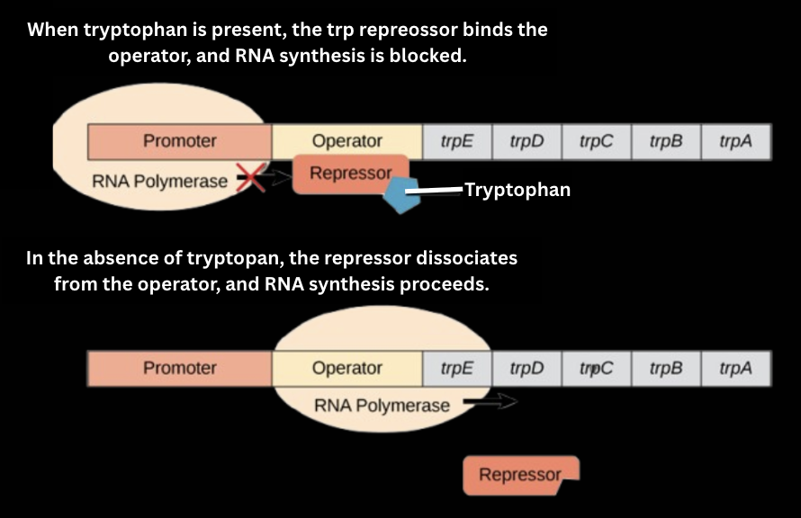

Certain genes or parts of genes can be turned on and off to achieve a very specific output.
- Transcription factors can bind to specific gene sequences and either activate or repress transcription.
- The regions of DNA are bound by transcription factors are either called promoters, enhancers, or silencers.
- Promoters are regions where RNA polymerase binds to initiate transcription.
- Enhancers are regions where the rate of transcription is increased.
- Silencers are able to slow down the rate of transcription.
Increased transcription rates = more gene expression = more of the desired protein.
Everything discussed above with regards to gene regulation has to do with eukaryotic cells.
Regulation of genes in prokaryotes:
- Related prokaryotes are typically grouped together into operons, which are transcribed together under the control of one promoter.
- Positive regulation: Repressorproteins bind to operators, preventing RNA polymerase from initiating transcription.
- Negative regulation: Activator proteins bind to operators, enhancing RNA polymerase binding, increasing transcription.
Classic Olympiad Gene Regulation Example:
- Lac operon in bacteria functions with 3 structural genes (lacZ, lacY, and lacA).
- When lactose is present, it binds to the lac repressor, preventing it from binding to the operator, allowing for transcription.
- When lactose is absent, there is nothing to block the repressor from binding to the operator, so transcription is stopped (no enzymes are produced to digest lactose).
- Note: Bacteria prefer glucose as opposed to lactose!

Written by Josephine Ankomah